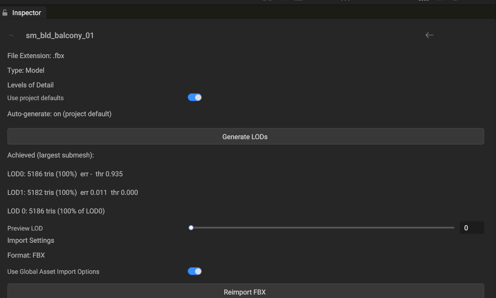

TL;DR
Static (non-animated) models get LOD chains automatically — nothing to set up. Import a model, and
up to 4 LOD levels are generated at load time by meshoptimizer, selected per-instance on the GPU
by screen coverage. Skinned meshes are excluded by default (opt-in per asset). The whole 828-model POLYGON
ElvenRealm pack generates in 91 ms total (worst single model: 6.3 ms), on background threads.
Zero-config path (what happens by default)
Drop FBX/glTF files into your project's Assets/ folder (or open a project that has them).
On load, each non-skinned mesh gets up to 4 LOD levels. You'll see one log line per model:
LOD gen: 3 meshes -> 4 LODs in 0.64 ms (7262 tris) (assets/fbx/props/sm_prop_tent_01.fbx)
At runtime the GPU picks the LOD per instance from projected screen coverage — distant instances render
with fewer triangles. Shadow cascades benefit the most (measured: generated chains cut cascaded-shadow GPU
time by up to 10× on heavy scenes).
Note
Meshes that are already simple stay LOD0-only — the simplifier only keeps a level when it actually reduces
triangles meaningfully. On stylized low-poly content (Synty), ~80% of meshes are correctly left untouched;
the heavy 20% (buildings, rocks, props) get chains.
Per-asset settings (Model Inspector)
Select a model in the Assets panel. The Inspector shows a Levels of Detail section:

Per-model LOD controls with the achieved-results table and forced-LOD preview slider.
Control
What it does
Use project defaults
ON (default): this asset follows the project-wide policy. Turn OFF to override LOD count, per-level target ratios/errors, border locking, and the skinned opt-in for this asset only. Overrides persist in the asset database (git-friendly, shared with the team).
Auto-generate
Shows the resolved policy (on (project default) in the screenshot). With a per-asset override you can force generation on/off regardless of the project setting.
Generate LODs
Explicitly (re)generates now and refreshes the results table. Useful after changing settings.
Achieved table
Per level: triangle count, % of LOD0, achieved simplification error, and the derived switch threshold. This is your quality window — if LOD1 shows a large error on a hero asset, override the ratios or disable generation for it.
Preview LOD
Forces a LOD level in the asset preview so you can eyeball each level before it ships.
Project-wide setting
Settings → Import → Auto-generate LODs toggles the project default (stored as
import.autoGenerateLODs in the project settings). It applies on every project-open path —
picker, last-project auto-load, and --project launches. Packaged Player builds inherit the
policy through game.config (lod.autoGenerate, also default-on), so shipped games
generate the same chains from the same settings.
To regenerate everything after changing the policy: run the Reimport LODs (project) command —
it walks every model in the project and reports regenerated / skipped counts.
What it costs
Corpus
Models
Meshes / tris
Total gen time
Worst model
p95
POLYGON ElvenRealm (Synty)
828
1,345 / 769k
91.3 ms (CPU, sum)
6.31 ms
0.43 ms
Generation runs on background asset workers during load — it never blocks the frame. The measured
number above is why auto-generation is on by default: it is effectively free next to FBX parsing
(~23 s for the same corpus).
Runtime behavior (how selection works)
A LOD level is either index-only or own-vertex. An index-only level is an index buffer over
LOD0's vertices and adds no vertex memory. An own-vertex level carries its own vertex block, uploaded after
LOD0's block in the same vertex buffer; an authored level on a mesh with vertex colors also carries its own
RGBA block. Levels of an authored LOD chain are own-vertex, and so are generated far levels that fell back to
the sloppy simplifier (rebuilt with their own vertices so normals and UVs stay correct); every other generated
level is index-only.
Per-mesh switch thresholds are derived from the achieved simplification error: a level that
simplified almost losslessly switches in earlier (bigger win, invisible), a lossy level waits until the
instance is small on screen.
Selection happens in the GPU draw-command scatter pass per instance per view, from projected coverage
of the bounding sphere — this includes shadow cascade views.
A switch between levels dissolves instead of popping: for LOD Crossfade (s) in
Settings → Level of Detail (default 0.25 s, 0 turns it off) both levels draw, each keeping a
complementary half of a screen-space dither; shadow casters switch without a fade.
An LOD chain imported with the model (_LOD<N> name suffixes, MSFT_lod,
FBX LOD groups, explicit slots) takes precedence over generation for that mesh.
A global LOD bias is available for debugging/perf work (lodBiasGlobal, exposed via render
stats tooling).
No per-object LOD authoring
There is no LOD component to add to an object and no per-renderer switch heights to tune. The mesh asset
carries the chain, the switch thresholds follow from the measured simplification error, and every instance of
the mesh uses them. The global LOD bias above scales every switch.
Skinned / animated models
Opt-in by design
Skinned meshes are skipped by default: position-only simplification ignores joint-assignment seams, which
can produce "weight swim" on animated silhouettes. If you want chains on a specific character, turn OFF
Use project defaults on that asset and enable Allow skinned, then verify animation quality with
the Preview LOD slider (static poses) and in Play mode.